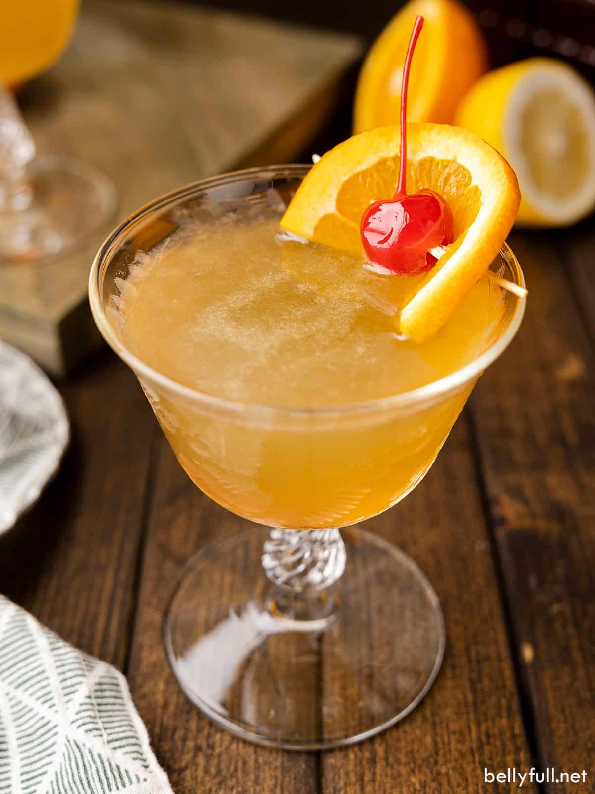

whiskey_sour

Top of the Line classic. Cant go wrong with bourbon and orange.
Ingredients
- Bourbon
- Lemon Juice
- Simple Syrup
- Orange wheel
- Marashino Cherry
Steps
- To a shaker, add bourbon, lemon juice and simple syrup
- Fill with ice and shake for 30 seconds
- Place ice into a glass, strain liquid into glass
- Top with orange wheel and cherry
Back to HomePage